Assignments
- Work through a git tutorial
- Build a personal site in the class archive
- Characterize your lasercutter
- Cut something on the vinyl cutter
- Design, laser cut, and document a parametric construction kit, accounting for the lasercutter kerf, which can be assembled in multiple ways
1. Git refresher
$ git status
Displays the status of your working directory. Options include new, staged, and modified files. It will retrieve branch name, current commit identifier, and changes pending commit.
$ git add [file]
Add a file to the staging area. Use in place of the full file path to add all changed files from the current directory down into the directory tree.
$ git diff [file]
Show changes between working directory and staging area.
$ git checkout -- [file]
Discard changes in working directory. This operation is unrecoverable.
$ git commit
Create a new commit from changes added to the staging area.
The commit must have a message
Source: GitLab
2. My site
Since I was expecting a fair amount of writing, I decided to use Jekyll to generate HTML from .md documents. Jekyll requires Ruby (>=v2.5.0), RubyGems, GCC, and Make. You can convert a HTML site to Jekyll, or get started with a fresh site. I found that themes like minima are a good place to start tinkering. I ended up taking a couple of inspirations and further customizing them to create something I liked.
To save repository space as directed, I minified javascript files and compressed images using Neil’s recommended ImageMagick command mogrify -quality 50% -resize 1000 *.jpg. Another big culprit for space seems to be font. I tried to optimize for space but as a consequence the custom font will not load on some browsers.
I wanted to create something that is clean and mobile-friendly. Here’s what my landing page looks like right now. I’m hoping to add photos or videos of my projects as they come in 📸

3. Laser cutter stats
The EDS shop has two different Universal Lasers. I couldn’t find the model names anywhere on the machines, but they are blue 🙃. Since the condition of laser cuts vary depending on the machine’s condition and mental state, a group of us from the EECS section ran some tests to characterize its current capabilities.
Power vs. speed
We used different power and speed combinations to cut out squares. A low power or slow speed may not be sufficient to cut through the material, but going too high or fast may cause charring. On the bigger machine, a power of 100% and speed of 10% was just good enough to cut through the cardboard material without burning it. The values for the smaller machine were 100% power and 18% speed.
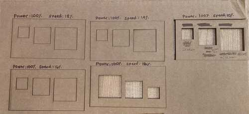
Kerf
The kerf is the material disintegrated by the cutting process. While small, this can affect the fit of two laser cut pieces, and can also add up when cut pieces are stacked together. The table below shows the test that we carried out. On average, the pieces lost 0.00625" or 0.159mm per cut. The more in focus the laser is, the smaller the kerf. However, given the natural warping of our cardboard material, this is not easy to control.
| Design | Actual |
|---|---|
| 1” x 1” | 0.989” x 0.981” |
| 1” x 1” | 0.9915” x 0.991” |
| 2” x 2” | 1.989” x 1.9835” |
| 2” x 2” | 1.9895” x 1.9855” |
Joint clearance
Because cardboard has a give, we found that a 4.3mm thick piece is able to fit into (theoretical) slots ranging from 4.0mm to 4.2mm at decreasing levels of snug-ness. Due to the aforementioned kerf, the real size of the slot is a little bigger.
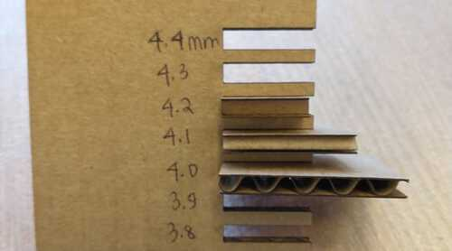
Focus
As the beam from the laser cutter is somewhat hourglass-shaped, it cuts with a wider kerf when the material is too far or too near. It is thus important to adjust the z-axis with the calibration tool. Moreover, some materials have warping and irregular thickness, so we have to re-calibrate the machine at several spots for ideal crispiness of each cut.
Ben and I also experimented with creating parametric snap-fit joints in Fusion 360.
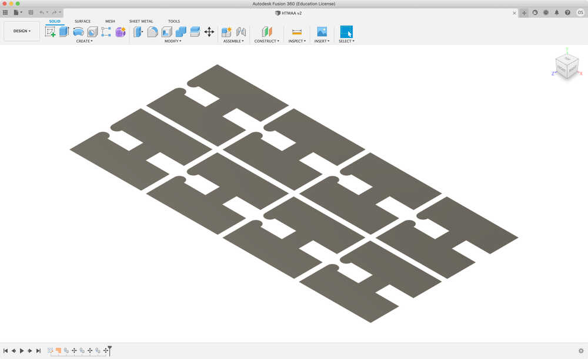
4. Vinyl catter
I decided to cut some cat silhouettes 😻
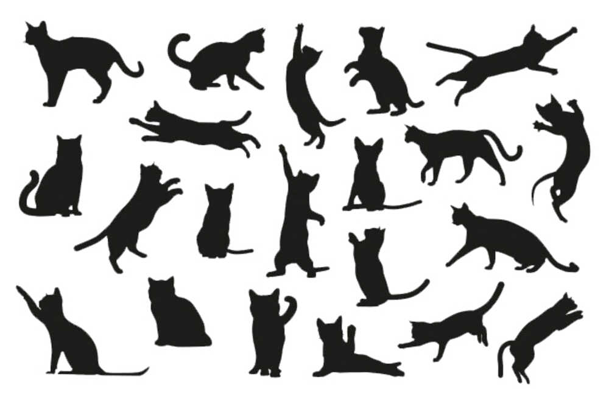
I put an uncompressed .png version of the above file into mods and set up the pipeline for cutting on the Roland GS-24.
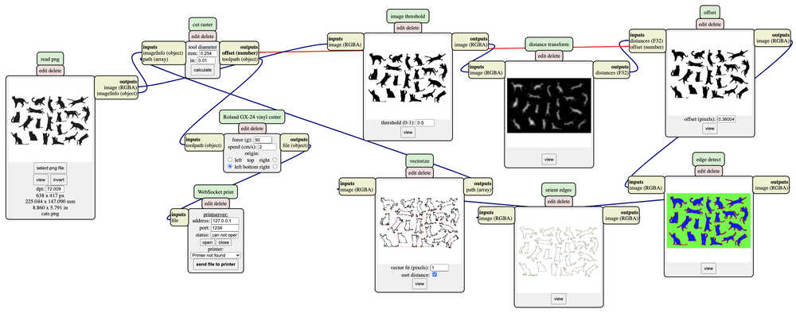
Then, I set up the vinyl cutter (feed in vinyl, calibrate knife) and started the cut.
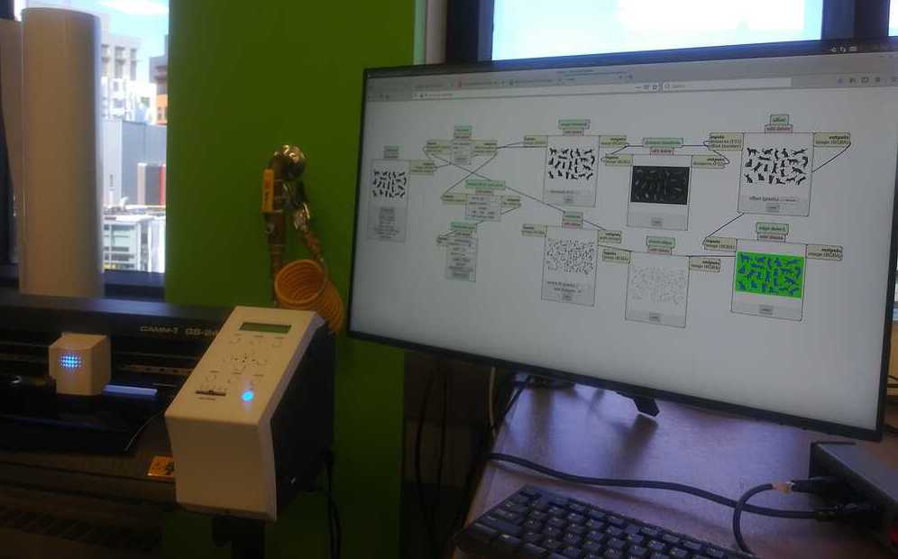
The cutter was at 140gf, but Anthony mentioned that I should have probably cut with more force since the machine was not in a cutty mood today (paraphrasing).
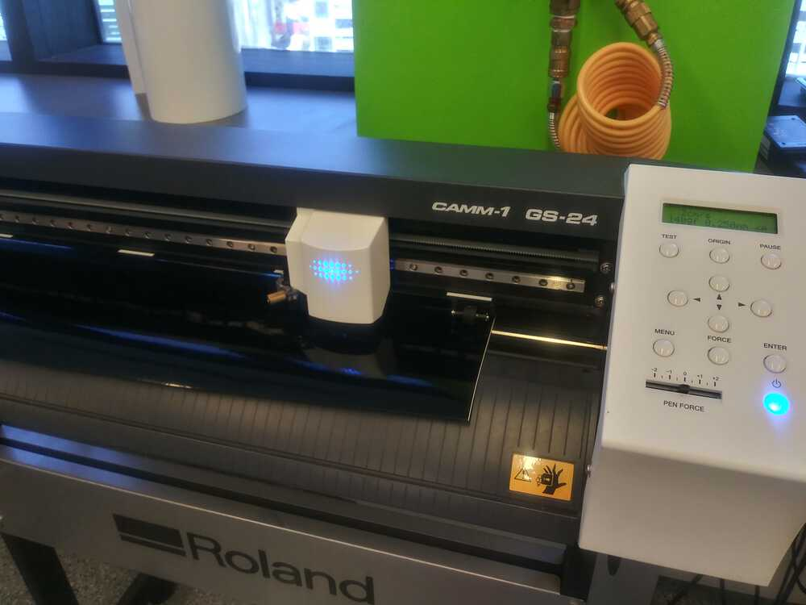
I transfered the vinyl onto sticky transfer paper, and then reversed the design onto the surface of my computer with the help of precision tweezers. Kitties galore!
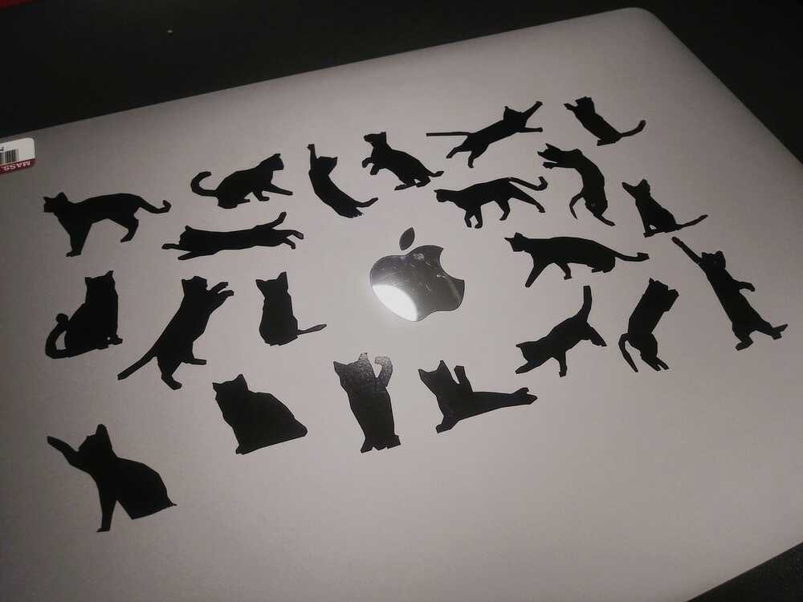
Besides being difficult to position, the process of transferring the vinyl was not that smooth, and there were several rips and bubbles in the sticker. Suggestions for future me:
- Clean vinyl cutter knife prior to cutting
- Increase cut force from
140gf(but test first) - Be more mindful about the design when peeling
- Peel with less rage and aggression
5. Parametric construction kit
My first attempt comprised of a simple geometric shapes with some teeth. I created two circles, and rotationally repeated a slot. The slot size and repeat values are parametrically determined. After boolean diffing using Cuttle I ended up with croissant puzzle pieces.
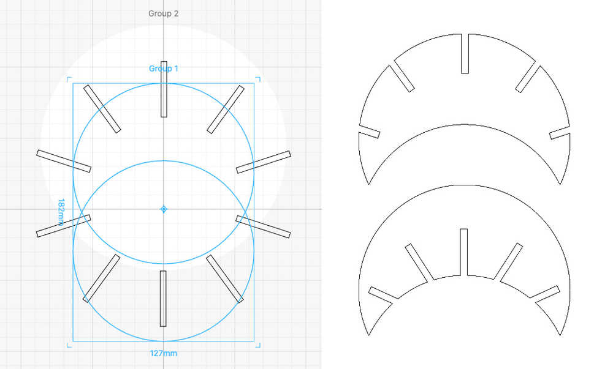
Slot sizes of 4mm were good as, after accounting for kerf, the pieces could fit snugly together and not fall apart when shaken.
Abstract croissant sculptures: 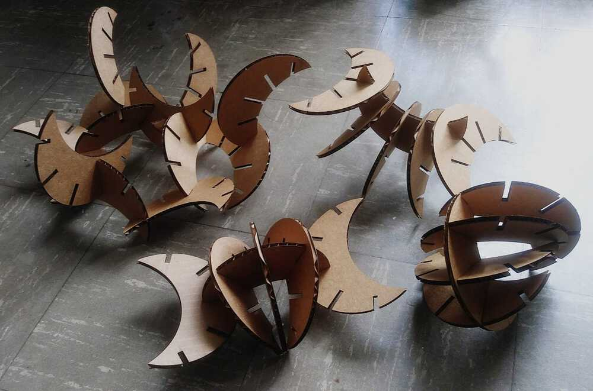
I had intended to turn the rightmost sculpture into a complete sphere, but the croissants were too curved to do that without warping the cardboard.
For my research with Fluid Interfaces and Snap, I’m curious about creative ways we can physicalize data and manipulate them as tangible bits. For instance, what if we could visually capture soundwaves as slices in time?
I had previously played with some 3D waveforms, and I wanted to create a 2D implementation of it. 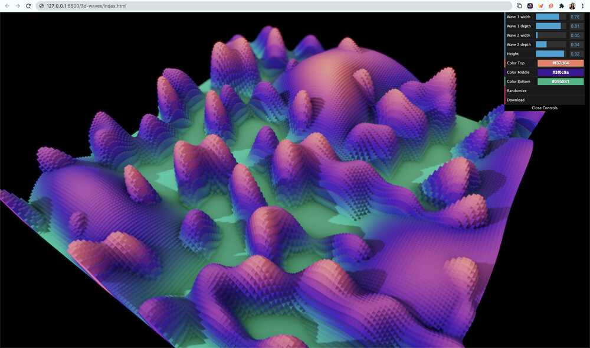
After some frustrating fiddling around with various CAD tools, I decided to take a JavaScript scripting approach to test how this might look like with sliced oscillating waveforms. I found JSFiddle references to be helpful, although they tended to crash my browser :/ The SVG I used is generated with three low frequency oscillators different dropouts and periods modulated together. The amplitudes were set to maximize the available space. I used dat.gui to visually adjust the parameters to create something interesting that still fit into a single laser cut session:
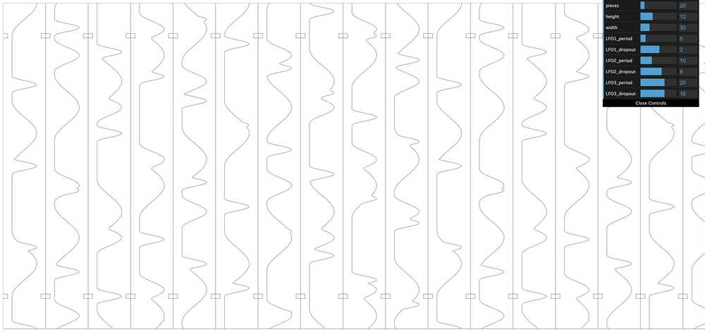
Each waveform is arranged in a praxinoscope-esque circular fashion. The wheel can be spun to generate a physical audio gif 🤔
I actually wanted the wave forms to be much more dense, but they turned out tooo tiny when cut out of a single sheet of cardboard (~18" x 31" on the big laser cutter). I did not like the messiness of the visual outcome due to the cardboard corrugation that is more obvious at this scale. I assembled it partially and realized it looked like a tree stump 🌳
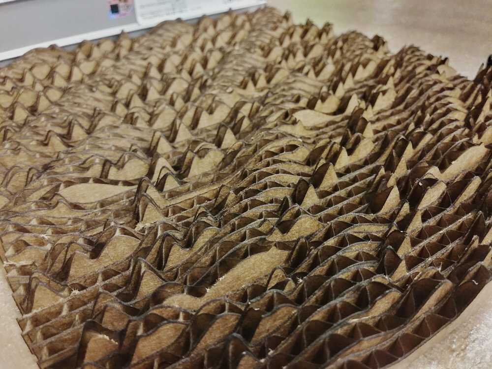 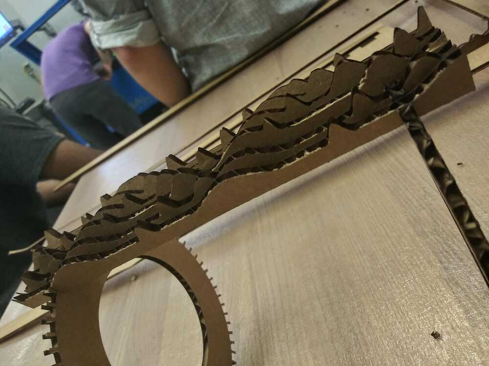
The center ring was cut up a little too much, so the fit was not as snug as the exmple before. I didn’t want to hog the cutter any more (sorry team 😭), so I stopped here.
Regardless, I quite enjoy how the light hits each slab in a different way. As a friend pointed out, it seems reminiscent of Daniel Rozin’s Wooden Mirror. I would like to further explore this!
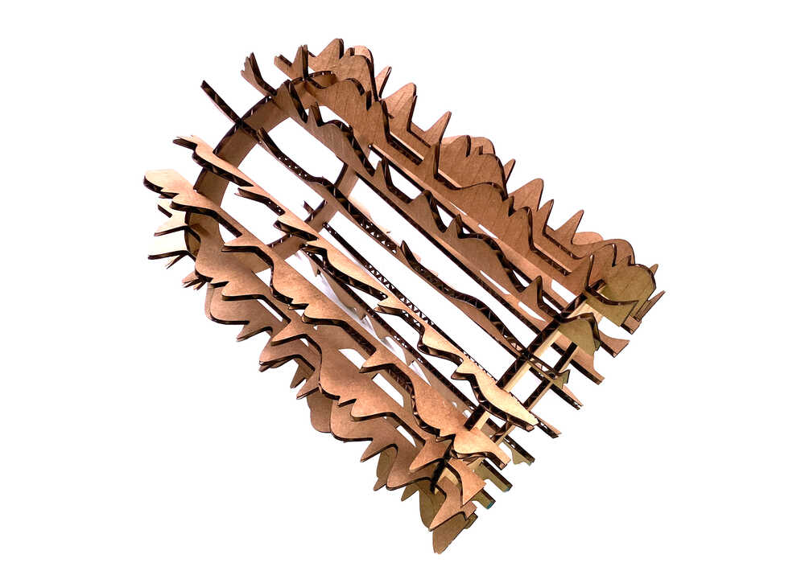